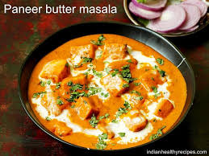

Paneer Butter Masala

Paneer Butter Masala is a rich and creamy curry made with paneer in a spiced tomato gravy. It’s flavored with butter, cream, and aromatic spices.
The dish is smooth, indulgent, and typically served with naan or rice for a satisfying meal.
Ingredients
- Paneer
- Tomatoes
- Butter
- Cream
- Spices(garam masala, cumin)
Steps
- Saute tomoates, garlic and spices in butter
- Blend into a smooth paste, then return to the pan
- Add cream, paneer, and simmer for a few mins
- Serve with naan or rice